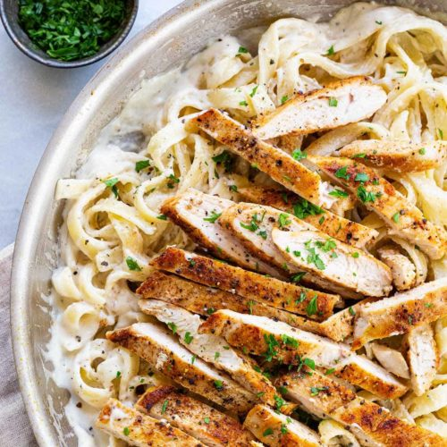

Simple Chicken Alfredo!

Easy made Chicken Alfredo!
A delicious dish that consists of pasta, chicken, and fettechine alfredo sauce.
This dish is simple, easy to make, and absolutely delicious! Definetely worth it!
Ingredients:
- Fettechine pasta noodles
- 1 pack of boneless chicken breast or chicken tenderloins
- Fettechine alfredo sauce of your choice or if you know how to homemake it, more power to you!
- Seasonings of your choice
Directions:
- Fill medium pot with water and bring to a boil
- Once water is boiling add in your pasta and cook until desired softness
- Now cook your chicken breast or tenderloins in a pan or skillet, season to taste, and FULLY cook them
- Once noodles are done, strain the excess water and add back into pot and set to low heat
- Finally, add your chicken and alfredo sauce to the pasta, stir to allow sauce to warm up and then turn off heat
- Let cool for atleast 5 minutes, serve and enjoy! (garnish with fresh parsley if desired or even top with parmesan cheese!)
Sucess! You've made a simple Chicken Alfredo dish! Enjoy!
Homepage